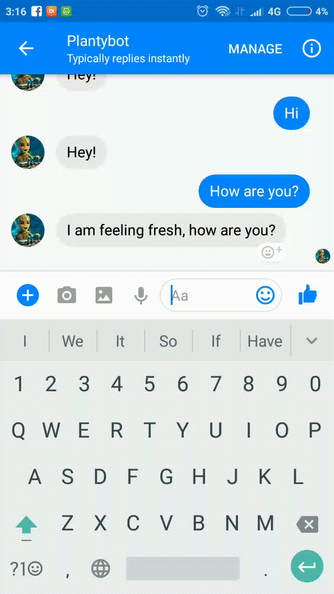

class: center, middle # Plantybot ```"An Urban-farming bot that you can chat with"``` _Presenter_  _Prashanth Gandhiraj_ --- layout: false .left-column[ ## What is plantybot? ### - 4 pieces ] .right-column[ Plantybot is an **Internet of things(IoT) product**, that help people farm indoors. The product can be divided into: 1. Vertical-farm 2. Aquaponics Eco-system 3. Sensors 4. Chatbot ] --- layout: false .left-column[ ## What is plantybot? ### - 4 pieces ### - Farm ] .right-column[ The proto we are designing is a stacked vertical farm, comparable to the size of cupboards. <img src="https://plantybot.github.io/pitch/images/plantybot_setup_3d.png" alt="farm" style="width: 550px;"/> ] --- layout: false .left-column[ ## What is plantybot? ### - 4 pieces ### - Farm ### - Aquaponics ] .right-column[ **Aquaponics** = **Aquaculture** + **Hydroponics** * Fishes enrich water with essential nutrients * Rich water is pumped onto the farmbeds * Oxygenated water is returned back to fishtank <img src="http://www.howtoaquaponic.com/wp-content/uploads/2015/04/the-aquaponics-cycle.jpg" alt="farm" style="width: 350px;"/> _src: howtoaquaponic.com_ ] --- layout: false .left-column[ ## What is plantybot? ### - 4 pieces ### - Farm ### - Aquaponics ### - Sensors and Actuators ] .right-column[ Bringing in sensors and actuators can render the farming ultra low maintenance ] --- layout: false .left-column[ ## What is plantybot? ### - 4 pieces ### - Farm ### - Aquaponics ### - Sensors and Actuators ### - Chatbot ] .right-column[ For frontend we want to go with a chatbot.  ] --- layout: false .left-column[ ## Why this product? ] .right-column[ **We need to change the way we make our food.** Food we make right now are: 1. having harmful chemical residue 2. Low nutrition value 3. Higher carbon footprint ] --- layout: false .left-column[ ## Why this product? ] .right-column[ Product Pros: 1. People in cities can connect more with nature 2. Aquaponics consumes 90% less water 3. No soil = more yield 4. Systems can be optimised for nutrient content, more than yield 5. Localized production of food leads to lesser carbon footprint ] --- layout: false .left-column[ ## How? ] .right-column[ How is the project implemented? <img src="https://plantybot.github.io/pitch/images/REST_API.png" alt="farm" style="width: 550px;"/> *Too techy! Lets discuss other hows* ] --- layout: false .left-column[ ## How? ] .right-column[ ### Business ideas **entry point** for this product is **office spaces**. Product can be designed based on it, like: 1. should take up minimal realestate 2. Many structural designs to make use of available office space to the fullest 3. Keep the technology simple, and progressively reduce price of making the product. ] --- layout: false .left-column[ ## How? ] .right-column[ When offices buy plantybots, they get: 1. A greener office (literally) 2. Employees enjoy harvesting healthy produces 3. Its an anti-stress product ] --- layout: false .left-column[ ## How? ] .right-column[ ### Roadmap Next in the road map are supermarkets and restaurants. * People harvesting produce and buying it adds value to supermarket businesses * Restaurants can create trust amongs customers and becomes a USP to use fresh, organic produce. ] --- layout: false .left-column[ ## How? ] .right-column[ ### Last frontier If we make the above two models work, make people buy plantybot for their homes. Ideally, this should become as inevitable as TVs, and Computers in households. ] --- layout: false .left-column[ ## Future ] .right-column[ ### Future 1. Create **online marketplace** for people to set up small businesses, cultivate and sell their produce 2. Make users agriculture literates by sharing content regularly ] --- layout: false .left-column[ ## Cons ] .right-column[ ### Cons 1. India has huge amount of lands that can be used for agriculture. So why an inhouse product? 2. Rooftop farming can be more economical ] --- class: center, middle # That's all folks (for now)! ### Questions? --- class: center, middle # Thanks ### Documentation: https://plantybot.github.io/pitch/